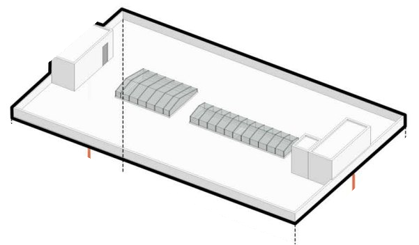
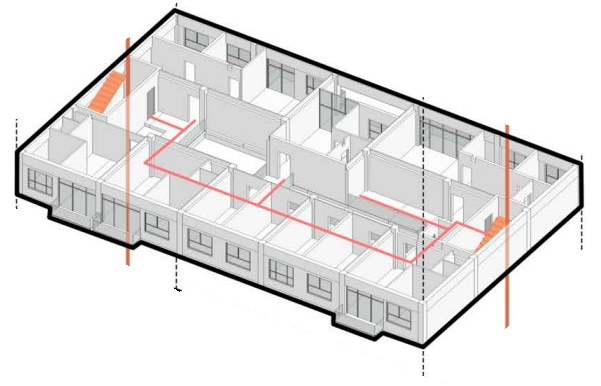
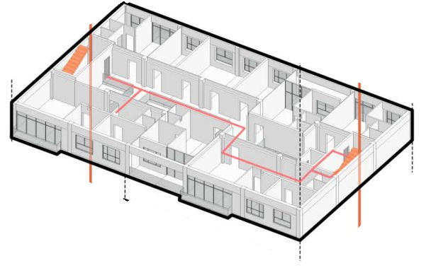
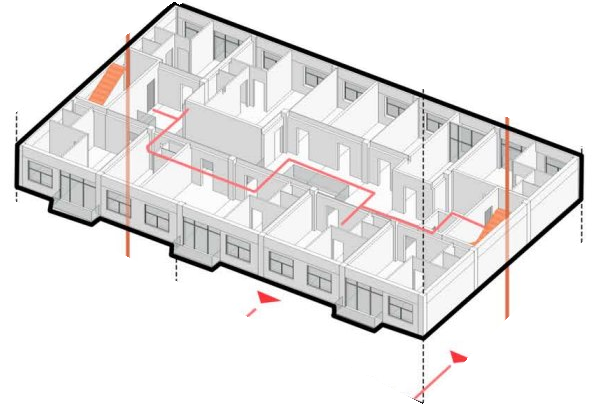
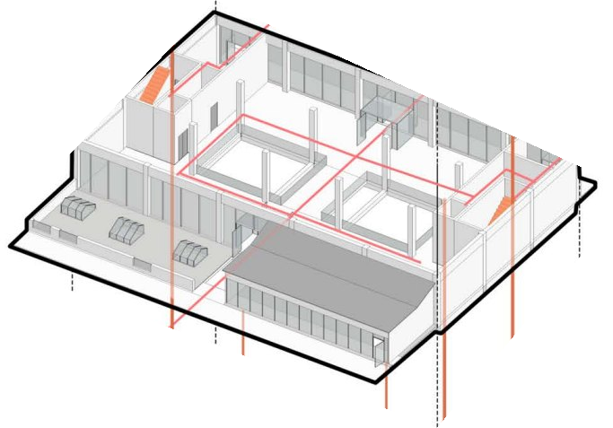
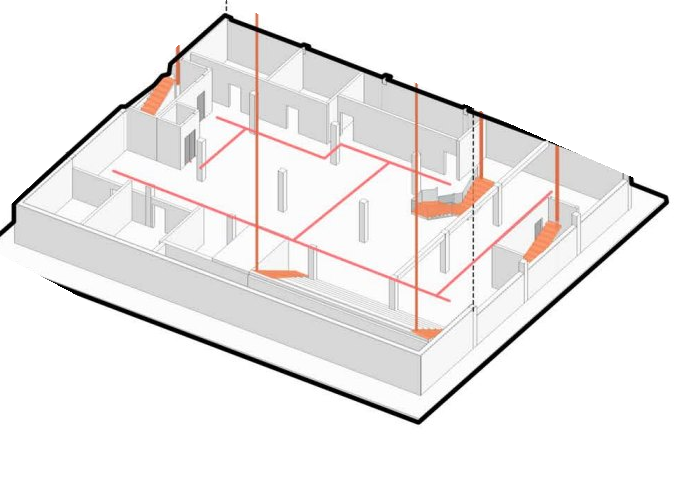
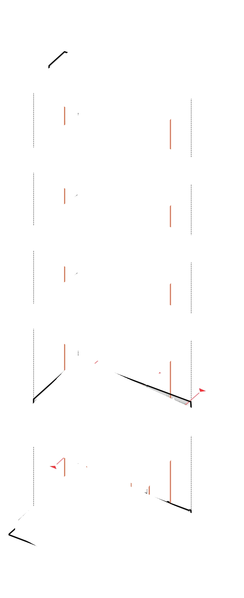

Exploded model
Scroll to take it apart, drag to turn it
The design model itself, scrolled apart floor by floor: cellar library, ground-floor civic core, three residential floors and the roof with its skylights. Glulam frame in timber tone, glazing translucent.
- 06Roof
- 05Level 4
- 04Level 3
- 03Level 2
- 02Ground floor
- 01Cellar library
Scroll to take it apart
Scroll to take the building apart: cellar library, ground-floor civic core, three residential floors and the roof with its skylights. Red lines trace the vertical circulation.







- 06Roof
- 05Level 4
- 04Level 3
- 03Level 2
- 02Ground floor
- 01Cellar
Inside the stack
Slice the building in plan at any floor or in section, light it for any date on Washington Avenue, and follow library visitors down the reading stair and residents up the stair and elevator cores. Plan north follows the model’s +Y axis, with Washington Avenue taken as running north-south.
A day walking on light
A resident leaves her apartment on the third floor and steps onto a T-shaped field of structural glass. Sunlight from the skylight filters through the plates; below, a neighbour sorts laundry in the micro-lounge.
Downstairs the language shifts from home to civic room. The elevator and the grand reading bleachers give every visitor, with or without a stroller, the same view of the stacks.

- Apartment on Level 3A resident leaves home
- Step onto the glass platesLight drops through the floor
- Daylit corridorThe double-loaded hall glows
- Down the reading stair & corePast the civic rooms
- Library at the baseOut to the street


Site and plans
The site on Washington Avenue sits between the Pratt campus, the brownstone blocks of Clinton Hill and the transit corridors to downtown Brooklyn. The site study maps its historical evolution and the axes that meet at the library door.


Two- and three-bedroom units around the luminous corridor.
Sections, elevations and construction

Reading stair down to the cellar.


A glue-laminated timber frame carries cross-laminated timber slabs; the wall builds out from stud framing and mineral-wool insulation to a ventilated cladding. The exploded axonometric traces the vertical circulation through all five levels.


Physical model
A laser-cut wood model of the whole building, built to be opened up: the facade, a cut-away unit, the light well and the library floor can all be read from outside.


Presentation boards